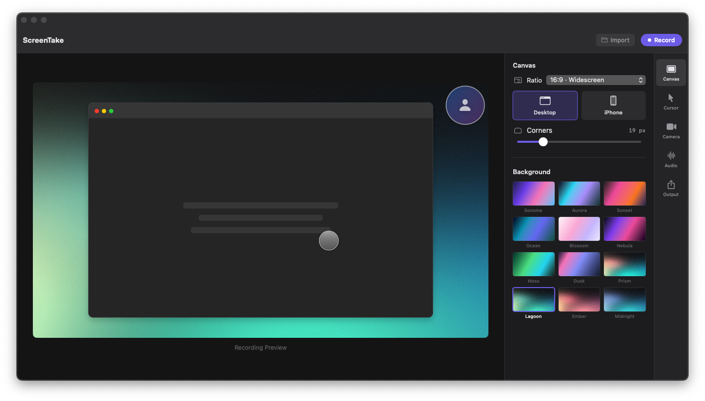

Give every click
its close-up.
Smart zoom brings the important details forward. Adjust the strength from 1.25× to 3× and keep your viewer with you.
SMART ZOOM ↗Make something
worth sharing.
worth sharing.
Let's take a look
Record and edit polished screen demos on your Mac.
Smart zoom, custom cursors, and your camera—all in one app.
Experimental beta · Apple Silicon · macOS 13+
Record your screen. Trim, split, and reorder your clips.
Then save a finished video to your Mac.

Choose your screen, set up your microphone and camera, and record at 30 or 60 FPS. Pause and resume from the native capture toolbar.
Everything you need to turn “let me show you”
into something clear, personal, and polished.
Smart zoom brings the important details forward. Adjust the strength from 1.25× to 3× and keep your viewer with you.
SMART ZOOM ↗Pick a style. Find the right size.
Make your next move easy to follow.
Try a style. ↗
Highlight clicks so viewers know exactly where to look. Choose from six highlight colors.
Keep your camera in an overlay or go full screen. Adjust the framing, follow your face, and add smooth transitions between sections.
Record your microphone, your Mac’s audio, or both. Your explanation and your screen, together.
Choose your microphone and record a voiceover while watching your video. Move and trim each take, then balance your voice with the original sound.
Smart zoom is experimental. Save a .screentake project to retain original recording data for cursor and zoom re-editing.
Give your recording room to shine.
Try a background and switch between widescreen, square, and portrait.

Your ideas deserve more than a raw screen recording.
From download to your first finished video.
A practical guide to the current Mac beta.
Get the 0.1.14 installer. Open it and drag ScreenTake.app into Applications. Eject the installer, then open the app.
Updating? Save your recording, quit the old app, and keep a backup until you’ve tried the new build.
Allow Screen Recording when prompted. On newer macOS versions, it may be called Screen & System Audio Recording. Allow Microphone and Camera if you want to use them.
Manage access in System Settings → Privacy & Security. Quit and reopen ScreenTake if macOS asks.
Choose what to capture and select 30 or 60 FPS. Pick your microphone, system audio, or both. Preview your camera in the canvas, then choose a background and cursor style. Enabling the camera turns the microphone on; you can turn it off or use it on its own.
Trying smart zoom? Start with a short recording so you can check the result.
Start with the app’s recording controls. Speak, move your pointer, and click through a few actions. Use the capture toolbar to pause and resume; press Esc to stop.
A quick test helps you catch microphone or camera issues before recording something important.
Preview the recording. Trim, split, and reorder clips on the timeline. Listen to detected pauses before removing them. Fine-tune your canvas, cursor, and zoom, then use Apply Changes for supported adjustments.
Choose File → Save Project… to retain source media, cursor data, and edits in a .screentake project.
When your preview is ready, use the save/download control or ⌘ + S to choose a destination. Save the MOV file, play it back, and check the audio, camera, and zoom before sharing.
Files stay on your Mac. Canceling the Save dialog keeps your recording available in the app.
Found a bug? Include your Mac model, macOS version, ScreenTake version, and what happened. Remove private information from screenshots or recordings.
Setup, shortcuts, and current limitations.
For Apple Silicon Macs running macOS 13+.
ScreenTake is signed with a Developer ID certificate and notarized by Apple. Make sure you installed the current DMG, then try opening the app from Applications. macOS may ask you to allow Screen Recording, Microphone, or Camera access.
If the app still won’t open, report the exact macOS message. Don’t disable macOS security protections.
| Shortcut | Action | When it works |
|---|---|---|
| Ctrl + Z | Toggle manual zoom | During recording, across apps |
| Ctrl + Space | Pause or resume | During recording, across apps |
| Esc | Stop recording | During recording, across apps |
| ⌘ + S | Open Save dialog | In ScreenTake, once the preview is ready |
Watch for conflicts: Control + Space may switch keyboard languages. Escape can stop a recording even when another app is focused. Use the capture toolbar if a shortcut conflicts.
Plain Z and Space also toggle zoom and pause when ScreenTake receives keyboard input. Manual zoom takes priority over automatic click zoom. Start recording with the app controls; Command + Shift + 2 isn’t connected in this build.
Review your export before sharing. Smart zoom is experimental. Some devices can experience intermittent microphone stalls or a brief black opening frame in the webcam overlay. Audio/video sync, multi-monitor capture, and performance across Macs still need testing.
Saved .screentake projects keep original recording data for cursor and zoom re-editing. Imported finished videos do not include that data. Editable sources also use local disk space.
ScreenTake checks for new builds when the app is open and ready to use, about once a day. You can also choose ScreenTake → Check for Updates…. Download Update opens the GitHub release page; installation is manual. Read the current release notes.
Yes. Import a video to preview it, edit its timeline, and adjust its presentation. Cursor and zoom re-editing require original capture data from a recording or saved .screentake project; they cannot be recovered from an imported, finished video.
Recordings and editable sources stay on your Mac. Use File → Save Project… to keep editing later. Preview your work, then choose where to save the exported MOV file. You can share it with the tools you already use.